CLAUDE’S PICK


TRIO: 검색 증강 생성을 위한 작업 정제와 개별 최적화
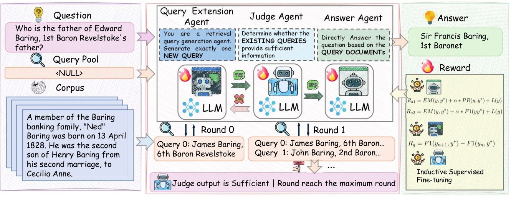
현재의 검색 증강 생성(RAG) 방식은 부적절한 검색과 할루시네이션 문제로 인해 성능이 만족스럽지 못하다. TRIO는 세 개의 에이전트에 반복적 정제 패러다임을 적용하여 이를 해결한다. 쿼리 확장 에이전트로 모호한 질문을 개선하고, 만장일치 투표로 검색 품질을 강화하며, 동적 매칭 기반 보상과 커리큘럼 학습으로 답변 정확도를 높인다. 다중 벤치마크 데이터셋에서 최첨단 방식 대비 우수한 효과를 검증했다.
핵심 포인트: 핵심 기여: 세 개의 최적화된 에이전트(쿼리 확장, 판정, 답변)를 반복적으로 정제하는 프레임워크를 제안하여 검색 품질 개선과 할루시네이션 감소를 동시에 달성하고, 여러 벤치마크에서 기존 RAG 방식을 능가하는 성능을 입증했다.
논문 (Papers)
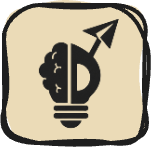
e-means — Lloyd 알고리즘 대비 10배 빠른 k-means 클러스터링
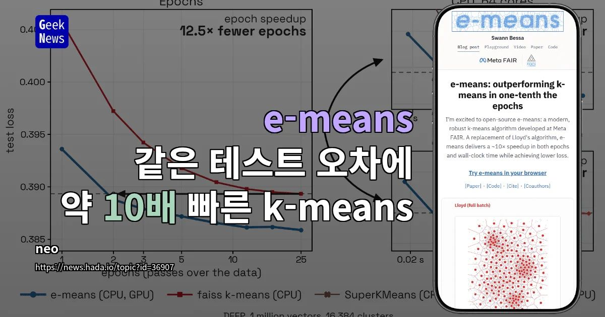
k-means 클러스터링에서 Lloyd 알고리즘은 수렴이 느리고 계산 비용이 높다는 문제가 있다. Meta FAIR에서 개발한 e-means는 미니배치와 지수이동평균을 결합해 이를 해결한다. 같은 테스트 오차에 도달하기까지 에포크는 1.23회(기존 25회 대비)로 단축되고, 실제 실행 시간은 GPU에서 Flash-KMeans 대비 1045배, CPU에서 Faiss 대비 8~15배 단축된다.
핵심 포인트: 핵심 성과: Lloyd 알고리즘의 25 에포크 테스트 오차를 1.23 에포크 만에 달성하며, 전체 실행 시간을 GPU에서 1045배, CPU에서 8~15배 단축. 자동 하이퍼파라미터 설정, 지수이동평균 갱신, 비활성 클러스터 복구 등의 기법으로 속도와 손실을 함께 개선.
기타 (Others)

Jev — 저렴한 결정 모델로 Opus 비용 4분의 1로 줄인 고객 식별 검증
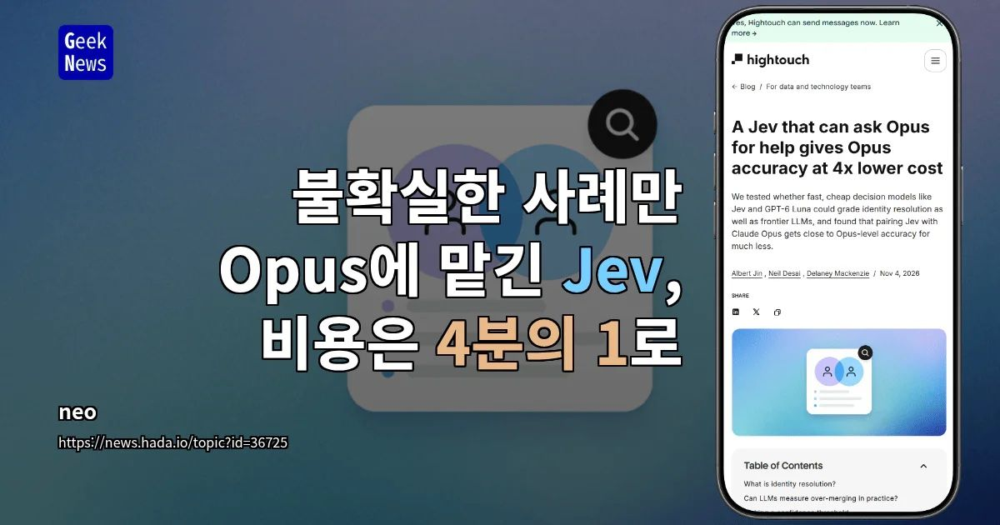
고객 레코드 병합 오류를 판별하는 작업에서 수작업 검토가 병목이 되는 문제를 해결하기 위해 저렴한 결정 모델 Jev를 먼저 사용하고 판단이 애매한 사례만 Opus에 재검토하는 계층적 접근법을 제시한다. 쉬운 테스트에서는 전체의 22%만 Opus로 재검토하면서 정확도 98.8%를 유지하고 비용을 1,000건당 3.86달러에서 0.88달러로 단축했다. 핵심은 Jev가 오답에 낮은 신뢰도 점수를 부여해 재검토 대상을 정확히 선별하는 능력이다.
핵심 포인트: 핵심 성과: Jev와 Opus 조합으로 Opus 단독 대비 1,000건당 비용 77% 절감(3.86달러 → 0.88달러)하면서 정확도 유지(98.8% vs 99.0%), 단일 모델의 신뢰도 점수만으로는 재검토 대상 선별 불가능한 반면 Jev는 불확실한 사례를 효과적으로 식별.
기타 (Others)
AI & RESEARCH
Claude Fable 5.2 — 프롬프트 한 줄로 코드 정리 비율 5배 향상
Claude Fable 5.2가 남의 코드로 인식하면 기존 구조를 보존하고 기능만 추가하는 경향이 있다는 문제를 해결하기 위해, 코드 소유권을 명확히 하는 프롬프트 지시를 추가했을 때 코드 정리 비율이 10% 미만에서 약 50%로 급증했다. 이는 Anthropic의 Claude Fable 5.2 프롬프트 엔지니어링 가이드에서 제시하는 핵심 패턴으로, AI 모델의 행동을 미묘하게 조정하는 프롬프팅의 중요성을 보여준다.
핵심 포인트: 핵심 성과: 단일 프롬프트 지시로 코드 정리 비율을 10% 미만에서 약 50%로 5배 향상시켰으며, 중복 코드 제거까지 자동으로 수행하도록 유도
🔗 platform.claude.com/docs/en/build-with-cl…
기타 (Others)
Gemini 4 Carbon — 구글의 최강 AI 모델 일반 공개
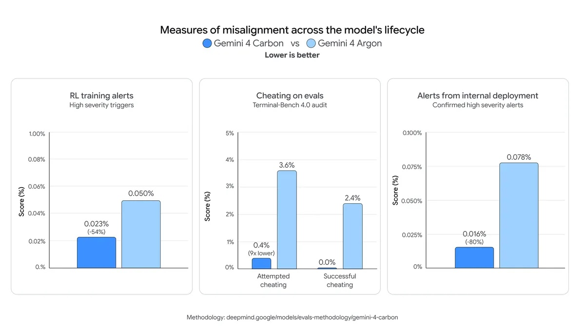
구글이 사이버보안과 복잡한 추론 능력에서 최고 성능을 보이는 Gemini 4 Carbon을 공개했다. 지난 10월 28일 사이버 방어 기관만 사용 가능했던 이 모델은 2주 만에 개발자, 기업, 일반 사용자에게 확대 공개되었으며, 최신 AI 벤치마크에서 1위를 기록했다. 입력 토큰당 2달러, 출력 토큰당 10달러의 출시 기념가로 제공되며 11월 30일까지 유효하다.
핵심 포인트: 핵심 성과: Artificial Analysis Intelligence Index v5.0에서 59점으로 1위 달성, SEC-bench Pro 88.2%, ExploitGym 54.8%, CWE-bench 71.0% 기록. 코딩, 디버깅, 과학 연구 등 한계를 시험하는 업무에 최적화된 고성능 모델.
🔗 blog.google/innovation-and-ai/models-and…
블로그 (Blog)
Claude Fable 5.2 & Mythos 5.2 — 앤트로픽의 고성능 AI 모델 출시
앤트로픽이 Claude Fable 5.2와 Claude Mythos 5.2를 공개했다. 두 모델은 동일한 기반이지만 Fable은 모든 사용자에게 공개되고 Mythos는 승인된 기관에만 제공된다. 이전 버전 대비 출력 속도는 최대 30% 향상되었고, 가격은 20% 인하되어 입력 토큰당 8달러, 출력 토큰당 40달러로 책정되었다. 코딩, 추론, 비전 능력에서 대폭 개선되었으며 AWS, 구글 클라우드, 마이크로소프트 애저에서 즉시 사용 가능하다.
핵심 포인트: 핵심 성과: 출력 속도 최대 30% 향상, 가격 20% 인하(입력 8달러/출력 40달러), Fast 모드로 처리 속도 최대 2.5배 향상. 소프트웨어 마이그레이션 자동화, 전자기기 설계, 블랙홀 물리학 문제 해결, 페르마의 마지막 정리 증명 형식화(30시간) 등 다양한 기술적 과제 해결 실적.
🔗 anthropic.com/claude-fable-and-mythos-5-2
기타 (Others)
Terminal-RSI: 재귀적 자기개선으로 터미널 에이전트 성능 2.4배 향상
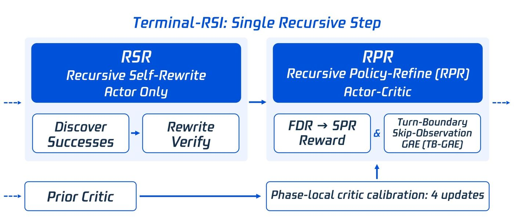
LLM 기반 터미널 에이전트가 부분 성공을 완전한 성공으로 오인하며 학습하는 문제를 해결하는 연구. 텐센트 연구진이 제시한 Terminal-RSI는 검증된 실행 기록을 토대로 모델이 작업 지침서를 작성한 뒤 이를 학습에 활용하는 재귀적 자기재작성(RSR)과, 강화학습으로 정책을 개선하는 재귀적 정책개선(RPR)을 반복 적용한다. 이를 통해 터미널 작업 성공률을 20.68%에서 50.58%로 향상시켰으며, 가중치와 코드를 공개했다.
핵심 포인트: 핵심 성과: Qwen 3.8-27B 모델의 터미널 작업 성공률을 20.68%에서 50.58%로 2.4배 개선했으며, 학습 중 50% 이상의 보상이 실패한 시도에 할당되는 문제를 식별하고 해결했다.
논문 (Papers)
Mirage — 22MB 경량 이미지 분석 AI 모델
모바일 기기에서 실행 가능한 경량 비전 모델의 필요성에 대응하여 Cactus Compute가 Mirage를 공개했다. 51.3백만 개 파라미터로 22MB의 초소형 용량에도 불구하고 물체 탐지, 텍스트 인식, 위치 관계 분석, 의사결정을 단일 패스로 수행한다. Galaxy S26에서 NPU 기준 74ms, CPU 기준 107ms 내에 이미지를 분석하며, 소형 언어 모델과의 협력 시 이미지 질문 정답률을 9.3%에서 31.3%로 향상시킨다.
핵심 포인트: 핵심 성과: 51.3M 파라미터 모델을 2비트 양자화로 22MB로 압축하여 모바일 기기 NPU에서 74ms 내 추론 가능, 언어 모델 성능 향상 기여도 입증.
🔗 cactuscompute.com/blog/mirage#sandbox
기타 (Others)
Anthropic — AI 에이전트 메모리 시스템의 설계 원칙 공개
AI 에이전트의 성능을 결정하는 핵심 요소인 메모리 시스템의 설계 구조를 다룬 연구. 세션 로그와 클로드가 작성한 관찰 노트를 처리하여 다음 세션 컨텍스트로 주입하는 방식으로, 정리된 폴더·파일 구조와 에피소드 메모리를 결합해 시스템 복잡도를 최소화하면서 에이전트의 장기 학습과 성능 향상을 가능하게 한다.
핵심 포인트: 핵심 기여: 인간의 뇌가 수면 중 기억을 재구성하듯이, 세션 간 메모리 통합을 통해 에이전트의 지속적 개선을 실현하며, 단순한 파일 시스템 기반 설계로 복잡도를 제어하면서도 에이전트 성능을 최적화하는 메모리 아키텍처 제시.
🔗 anthropic.com/research/components-of-agen…
기타 (Others)
DR Pixel: 페이지 이미지 기반 딥리서치 에이전트
과학 논문의 표, 그림, 수식 정보가 OCR 텍스트화 과정에서 손실되는 문제를 해결하는 오픈소스 딥리서치 에이전트. DR Pixel은 렌더링된 페이지 이미지를 직접 검색하고 추론하는 멀티모달 방식으로, 별도 학습 없이도 OCR 기반 방식보다 우수한 성능을 보인다. 106만 페이지 규모 코퍼스에서 동작하며, 반사실적 신용 재가중치 방법으로 추가 학습 시 검색 재현율 15점, 최종 정확도 10점 이상 향상된다.
핵심 포인트: 핵심 성과: GPT-4o, Gemini-3.5-Flash, Qwen3.6-27B 모두에서 OCR 방식 대비 우수한 성능 달성, 도구 호출 횟수는 감소, 분포 밖 데이터(ViDoRe-V3)에서 오라클과의 격차 1.8점으로 일반화 성능 입증.
논문 (Papers)
METR — 앤트로픽의 AI 개발 속도 2배 가속 확인
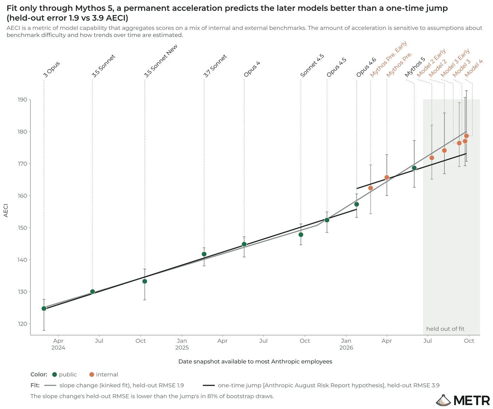
AI 위험 평가 기관 METR이 11주간 앤트로픽 내부에서 직접 수집한 데이터를 분석한 결과, 앤트로픽의 모델 능력이 2024년 3월 이후 약 2배 빠른 속도로 향상되고 있음을 확인했다. 이 가속의 대부분은 AI를 연구개발에 직접 활용한 결과이며, 공개되지 않은 내부 모델 Model 4는 현재 공개된 Opus 5.5보다 높은 성능을 보였다. 보고서는 외부 독립 기관에 의한 AI 연구소 개발 속도 실시간 감시의 첫 사례다.
핵심 포인트: 핵심 성과: 앤트로픽의 AI 능력 향상 속도가 약 2배 가속되었으며, 공개되지 않은 내부 모델 3개(Model 2, Model 3, Model 4)가 발견되었고 Model 4는 공개 모델 Opus 5.5를 초과하는 성능 달성.
🔗 metr.org/blog/2026-11-05-anthropic-ai-rd…
기타 (Others)
nomic-ai: 멀티모달 임베딩으로 텍스트·PDF·차트·이미지 통합 검색
텍스트, PDF, 차트, 이미지 등 다양한 형식의 문서를 통합하여 검색하기 어려운 문제를 해결하는 멀티모달 임베딩 모델. nomic-ai는 7B와 3B 크기의 colnomic-embed-multimodal과 nomic-embed-multimodal 모델을 제공하여 시각 문서 검색을 가능하게 한다. 이 모델들은 텍스트와 시각 정보를 동시에 처리하여 더욱 정확하고 유연한 문서 검색 경험을 제공한다.
핵심 포인트: 핵심 기여: 4가지 멀티모달 임베딩 모델(7B, 3B 규모)을 통해 텍스트·이미지·차트·PDF를 통합하는 시각 문서 검색 솔루션 제공하며, 700개 이상의 모델 사용 기록으로 높은 실용성 입증.
기타 (Others)
Latent Sparse Attention — 1천만 토큰 처리 시 어텐션 연산 72배 가속
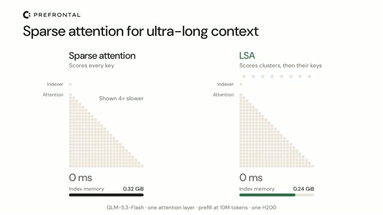
초장문 컨텍스트 처리 시 어텐션 메커니즘의 이차 복잡도로 인한 성능 저하 문제를 해결하는 연구다. Prefrontal AI의 Latent Sparse Attention(LSA)은 정보를 의미별로 클러스터링한 후 큰 그룹부터 검색하여 관련성 높은 부분만 상세히 처리함으로써 연산 효율을 극대화한다. 기존 전체 어텐션 대비 72.4배, GLM-5.3-Flash 대비 22.7배 성능 향상을 달성하면서도 정확도는 유지한다.
핵심 포인트: 핵심 성과: H200 GPU에서 1천만 토큰 처리 시 기존 희소 어텐션보다 72.4배 빠른 어텐션 연산 실현, 기존 모델에 단기 증류로 추가 가능하거나 새 모델 학습 시 처음부터 적용 가능
기타 (Others)
DEVTOOLS & OPEN SOURCE
OpenSpec — AI 코딩 전 계획서 자동 생성으로 개발 프로세스 체계화
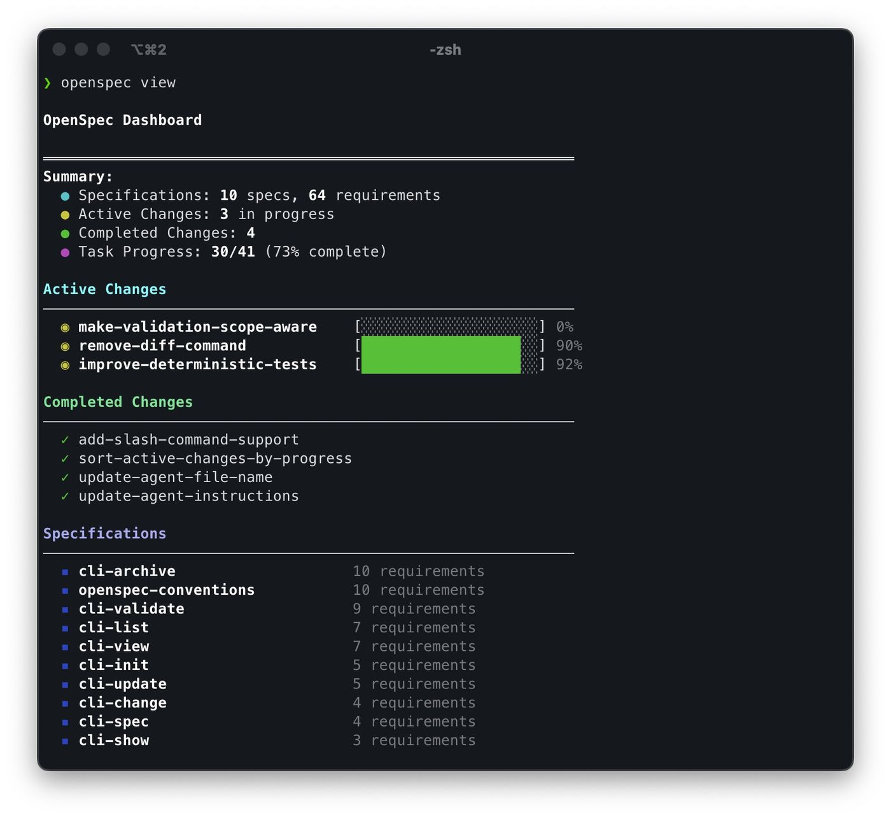
AI 코딩 어시스턴트가 구체적인 계획 없이 코드를 작성할 때 발생하는 품질 저하와 요구사항 누락 문제를 해결하는 스펙 기반 개발 플랫폼이다. OpenSpec은 탐색 단계에서 요구사항을 논의한 후 제안서 생성으로 설계·목표·할 일 목록을 자동 작성하고, 이를 기반으로 AI가 체계적으로 구현하도록 유도한다. 30개 이상의 코딩 AI와 호환되며 깃허브에서 74,422개의 별을 받은 활발히 개선되는 프로젝트다.
핵심 포인트: 핵심 기여: 탐색-제안-적용의 3단계 워크플로우로 AI 코딩의 계획 단계를 형식화하고, 다양한 AI 모델과 통합 가능한 스펙 기반 개발 방식론 제시.
🔗 github.com/Fission-AI/OpenSpec
GitHub
jcode — 수십 개 AI 에이전트를 저메모리로 병렬 실행하는 Rust 기반 코딩 도구
여러 개의 코딩 AI를 동시에 실행할 때 과도한 메모리 소비로 인한 성능 저하 문제를 해결하는 고성능 에이전트 하네스. jcode는 추가 세션당 3.3MB의 최소 메모리만 소비하며 Claude Code의 1/51배 수준의 메모리 효율성을 제공한다. 또한 입력 반응 시간 19.1ms로 Claude Code 대비 184배 빠르고, 동일 폴더 내 AI 간 협업 기능과 간편한 설치를 지원한다.
핵심 포인트: 핵심 성과: 추가 에이전트당 메모리 소비 3.3MB(Claude Code 대비 51.3배 적음), 입력 반응 시간 19.1ms(Claude Code 대비 183.9배 빠름), GitHub 21,604 stars 달성. 동일 폴더 내 AI들 간 작업 공유 및 협업 소통 기능 내장.
GitHub
Overmind — AI 에이전트가 모델 학습·배포까지 자동화
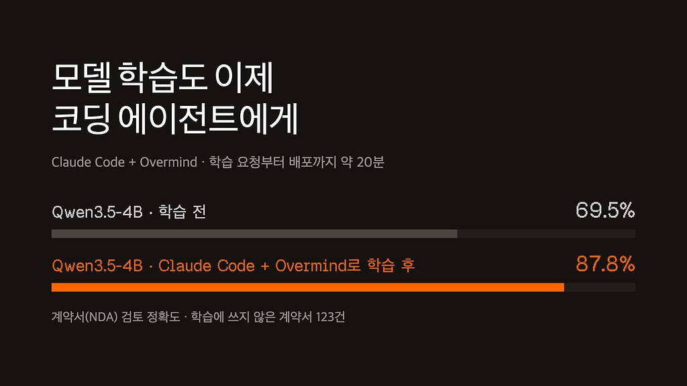
코딩 에이전트에 모델 학습까지 맡길 수 있는 오픈소스 플랫폼인 Overmind의 실제 활용 사례를 소개한다. Claude Code에 계약서 검토 모델 학습을 요청했을 때 약 20분 만에 Qwen3.5-4B를 파인튜닝하고 배포했으며, 정확도가 69.5%에서 87.8%로 향상되었다. 에이전트가 데이터 준비부터 배포까지 전체 과정을 수행하고 사람은 예산 한도와 중단 규칙만 사전 승인하면 된다.
핵심 포인트: 핵심 성과: Claude Code를 통해 계약서 검토 모델을 약 20분 내 자동 배포, 정확도 69.5%에서 87.8%로 상향. 에이전트가 전체 ML 파이프라인(학습, 평가, 배포)을 자동 관리하며 사람의 개입은 최소화.
🔗 discuss.pytorch.kr/t/claude-code-20-69-5…
기타 (Others)
Socratic Tutor — 소크라테스 방식의 AI 개인 튜터 스킬
LLM이 학생의 학습 수준을 진단하지 못하고 일방적으로 설명만 제공하는 한계를 해결하는 에이전트 스킬. Jane Street의 Agent Skills 컬렉션에 포함된 Socratic Tutor는 소크라테스 메서드를 구현하여 AI가 한 번에 하나의 질문을 던지고, 사용자가 답변하면서 학습하는 방식으로 진행된다. 초기 진단부터 난이도별 스킬맵(레벨 0-5), 분산 복습, 최종 평가까지 완전한 학습 사이클을 제공한다.
핵심 포인트: 핵심 기여: 기존 설명형 학습과 달리 능동적 답변 과정에서 사용자의 지식 격차를 정확히 파악하고 보정하는 대화형 튜터링 시스템을 구현했으며, SKILL.md 포맷을 통해 모든 AI 에이전트 및 챗봇에 즉시 통합 가능하다.
🔗 github.com/janestreet/agent_skills
GitHub
pg-jev — 자연어로 PostgreSQL 테이블을 직관적으로 질의하는 확장
PostgreSQL에서 SQL 쿼리 작성 없이 자연어로 데이터를 조건 필터링, 순위 매김, 분류하기 어려운 문제를 해결하는 확장 프로그램. TypeSafe의 Jev 모델을 기반으로 인덱스, 임베딩, 벡터 컬럼 없이도 각 행마다 보정된 확률을 반환하여 직관적인 데이터 쿼리를 가능하게 한다.
핵심 포인트: 핵심 기여: 벡터 임베딩이나 추가 인프라 없이 SQL에서 자연어 조건을 직접 사용할 수 있으며, 필터링뿐 아니라 확률 기반 순위 매김과 다중 선택지 분류 쿼리를 바로 활용 가능하다.
GitHub
json-render — Slack에서 AI가 텍스트 대신 동적 UI를 실시간 생성
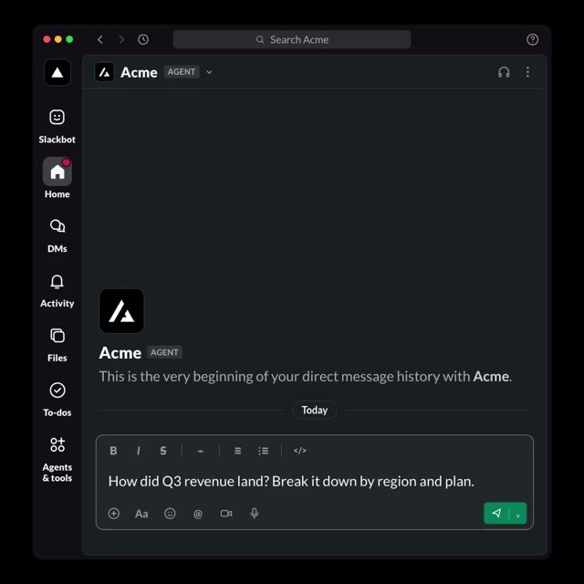
기존 챗봇이 텍스트로 분석 결과를 설명하는 문제를 해결하는 생성형 UI 프레임워크. Vercel Labs의 json-render는 AI가 Slack, Teams, Discord에서 표, 차트, 입력창, 버튼 등 동적 컴포넌트를 직접 생성하고 실시간으로 렌더링할 수 있게 한다. 매출 분석 요청 시 숫자 나열 대신 상세 데이터가 담긴 차트형 카드를 생성하며, React, Vue, Svelte, Next.js 등 다양한 플랫폼을 지원한다.
핵심 포인트: 핵심 기여: 미리 정의된 컴포넌트와 액션으로 안전하고 예측 가능한 출력을 보장하면서도, React, React Native, Remotion, PDF, 이메일, Terminal UI 등 8가지 이상의 플랫폼에서 동일한 구성 요소를 재사용 가능하게 구현.
🔗 github.com/vercel-labs/json-render
GitHub
Single Agent Loop Kit — 다중 에이전트를 단일 루프로 통합하는 평가 기반 시스템
다중 에이전트 시스템을 운영할 때 불필요한 하위 에이전트로 인한 복잡성과 성능 저하 문제를 해결하기 위한 도구. Anthropic의 Single Agent Loop Kit은 라우터와 오케스트레이터 구조를 거쳐 필요한 스킬과 도구를 동적으로 로드하는 단일 루프 시스템으로 변환한다. 모든 변경사항을 평가 점수로 비교하여 수치 기반의 통합 여부를 결정하므로, 단순 축소가 아닌 성능 검증을 통한 최적화를 실현한다.
핵심 포인트: 핵심 기여: 평가 체계를 내장한 에이전트 통합 프레임워크로, 하위 에이전트를 일괄 제거하지 않고 각 변경에 대한 스코어링을 통해 개선 효과를 정량화하며, 남은 에이전트만 메인 에이전트의 스킬과 도구로 점진적으로 폴드하는 방식으로 시스템 복잡성을 감소시킨다.
🔗 github.com/anthropics/single-agent-loop-k…
GitHub
Elephant-Goldfish Model — AI 코드 작성 오류를 사전에 검증하는 구글의 오픈소스 플러그인
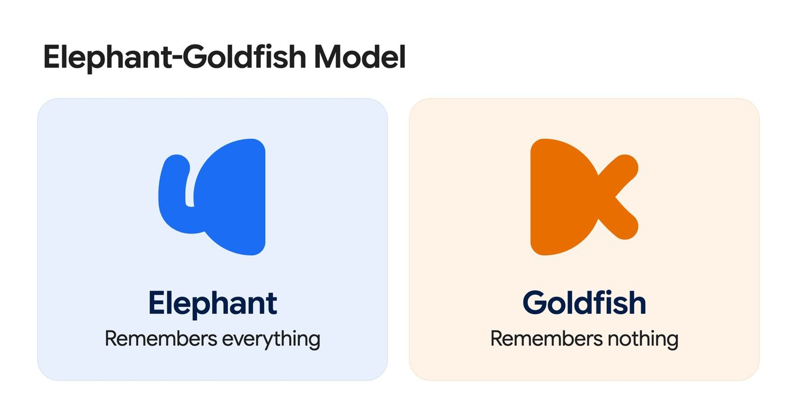
AI가 작성한 코드의 설계 결함을 사전에 방지하기 위해 구글이 사내에서 사용 중인 도구를 오픈소스로 공개했다. Elephant 에이전트가 전체 맥락을 유지하며 설계서를 작성하고, Goldfish 서브에이전트가 사전 맥락 없이 문서를 검토하여 누락된 가정과 구현 리스크를 5단계로 검증함으로써 코드 작성 전에 아키텍처 오류를 발견한다.
핵심 포인트: 핵심 기여: 이중 에이전트 구조를 통해 맥락 편향을 제거하고 설계 오류를 사전 검증하는 워크플로우 제공. 구글 수천 명의 엔지니어가 실제로 사용 중인 검증된 방법론을 오픈소스로 공개하여 AI 기반 소프트웨어 개발의 신뢰성을 향상시킨다.
🔗 github.com/google/elephant-goldfish-model
GitHub
ENGINEERING
Claude — 건축구조 검토에서 기둥 보강안 제시
구조 엔지니어가 Claude를 STAAD.Pro API와 연결하여 캐노피 구조물을 검토할 때 풍하중으로 인한 Z축 처짐이 기준을 1.5배 초과하는 문제가 발생했다. Claude는 중간 기둥 플랜지를 280mm에서 340mm로 확대하는 구체적인 보강안을 제시하여 처짐을 H/264에서 H/388로 개선시켰으나, 최종 설계 결정은 엔지니어가 내렸다.
핵심 포인트: 핵심 성과: Claude의 AI 분석으로 구조 문제점을 정확히 지적하고 구체적 보강안(플랜지 60mm 확대)을 제시하여 처짐을 36% 개선했으며, 인간 엔지니어가 최종 검증 및 의사결정을 수행하는 협업 구조 확립.
🔗 threads.com/@sandwich.ai_/post/DfZqkX_EXA…
기타 (Others)
PRODUCT & INDUSTRY
Herdr — 스마트폰에서 원격 AI 에이전트 관리하는 공식 모바일 앱
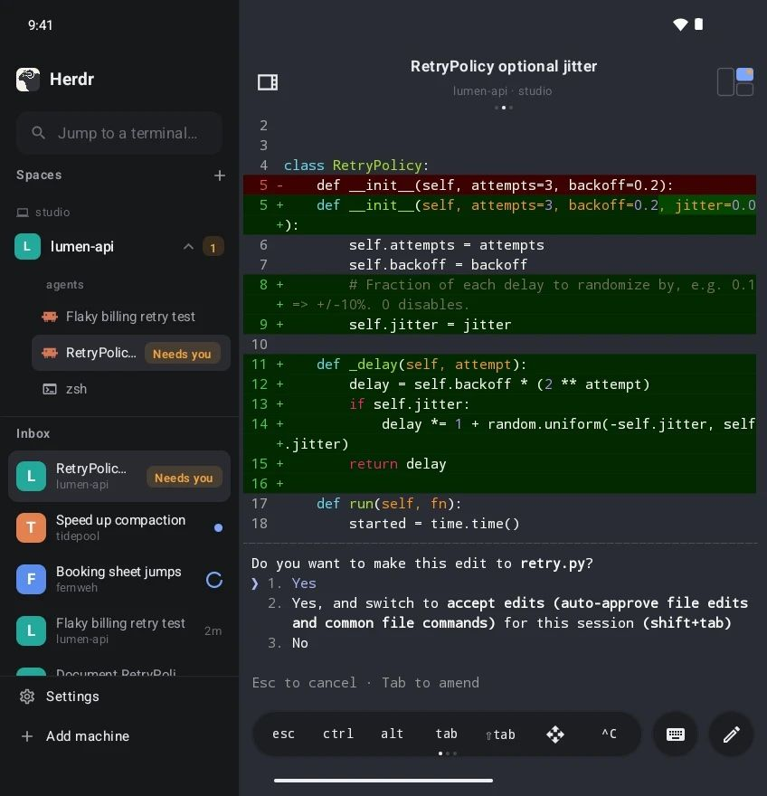
여러 기기에서 실행되는 AI 에이전트를 관리할 때 데스크톱에만 접근할 수 있다는 제약이 있었다. Herdr의 공식 모바일 앱은 스마트폰만으로도 모든 기기의 에이전트를 통합 받은편지함에서 확인하고, 실시간 터미널에 접근하며, 음성 입력 및 사진 첨부 등 다양한 방식으로 원격 제어할 수 있도록 한다. 이를 통해 사용자는 언제 어디서나 자동화된 작업을 관리하고 상호작용할 수 있다.
핵심 포인트: 핵심 성과: 스마트폰에서 모든 기기의 에이전트를 하나의 받은편지함으로 통합 관리하고, 실제 터미널 환경에 직접 접근하며, 음성 인식, 텍스트, 사진 첨부를 통한 다중 입력 방식 지원으로 완전한 원격 제어 환경 구현
기타 (Others)
Amazon Bedrock: 질문 복잡도에 따른 적응형 검색 전략
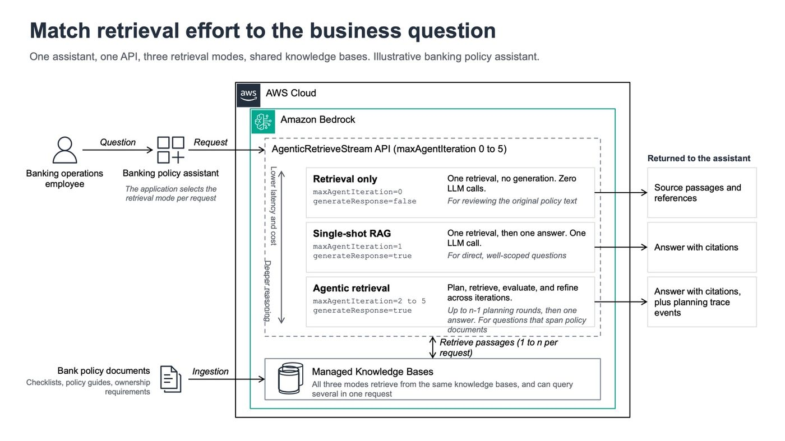
단순한 질문과 복잡한 질문 모두를 효율적으로 처리해야 하는 RAG 시스템의 문제를 해결하는 Amazon Bedrock Managed Knowledge Base의 새로운 기능. 검색 반복 횟수를 0~5 사이에서 조절할 수 있어, 단순 검색부터 멀티턴 에이전틱 검색까지 질문의 특성에 맞게 최적화된 응답을 제공한다. 범위가 분명한 질문에는 단일 검색을, 비교 및 탐색형 질문에는 에이전틱 검색을 적용하여 지연시간과 정확도 사이의 균형을 유연하게 조절할 수 있다.
핵심 포인트: 핵심 기여: 검색 모드 5단계 조절을 통해 단순 질문의 응답 속도와 복잡 질문의 정확도를 동일 시스템에서 최적화하며, 애플리케이션이 질문 특성에 따라 적응형으로 전략을 선택할 수 있는 유연성 제공.
🔗 aws.amazon.com/blogs/machine-learning/sin…
기타 (Others)
LlamaIndex Extract — 복잡 문서 추출 정확도를 위한 Max Effort 모드
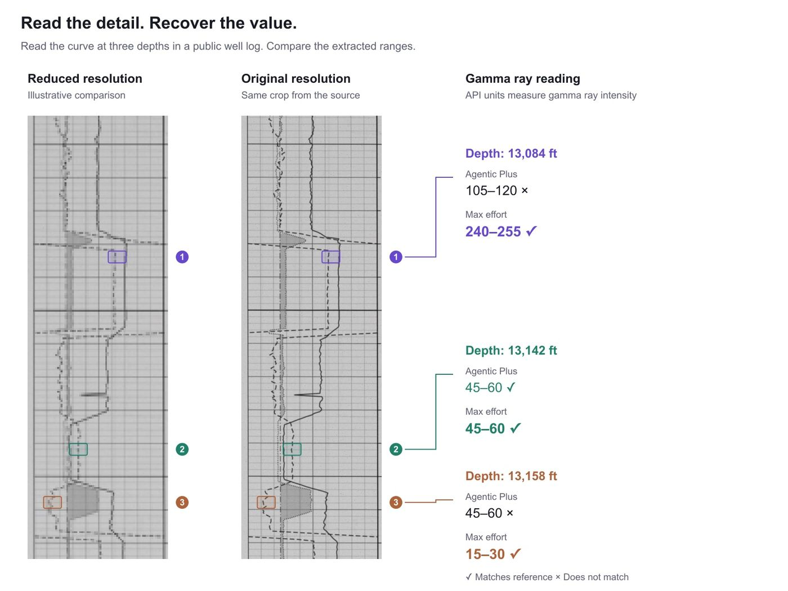
복잡한 문서에서 작은 표와 도식을 놓치거나 잘못 추출하는 문제를 해결하기 위해 LlamaIndex가 Extract의 agenticplus 계층에 Max Effort 설정을 도입했다. 이 모드는 문서의 요구도에 따라 계산량을 동적으로 조절하여 세밀한 시각 요소와 다중 페이지 관계를 높은 해상도로 분석하고, 변동 요금 체계로 추출 품질을 최대화한다.
핵심 포인트: 핵심 기여: 문서 복잡도에 따라 변동 비용 기반의 처리를 수행하며, 기존 표준 추출 대비 높은 신뢰성으로 누락이나 오류로 인한 비즈니스 비용을 감소시킨다.
🔗 llamaindex.ai/blog/introducing-max-effort…
기타 (Others)
한컴·토펙엔지니어링 — 에이전틱 OS로 건설 제안서 AI 자동화
건설·엔지니어링 분야에서 제안서 작성 시 발주처별 서식 맞춤, 도식 생성, 필수 항목 검증 등으로 인한 시간 낭비가 발생하는 문제를 해결하기 위해 한글과컴퓨터와 토펙엔지니어링이 협력한다. 에이전틱 OS 기반 AI 에이전트로 요구사항 분석과 초안 작성뿐 아니라 HWP 도형 기능을 활용한 도식 생성과 발주처별 맞춤형 서식 편집까지 자동화하는 개념검증을 추진한다. 초안 생성부터 제출 직전까지 전체 업무 효율성을 재검토하는 실증을 통해 실제 업무 생산성 향상을 목표로 한다.
핵심 포인트: 핵심 성과: 제안서 작성의 요구사항 분석, 초안 생성, 도식화, 발주처별 서식 최적화까지 전 과정을 자동화하여 제출 전 검토 시간 단축 및 누락 방지에 초점.
🔗 yna.co.kr/amp/view/AKR20261104051000017
기타 (Others)